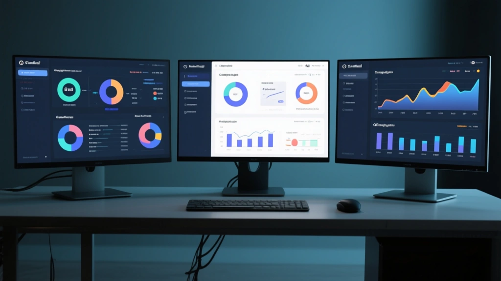

Marketers obsess over subject lines and content, but timing matters just as much. When you align sends with tiny, almost invisible micro-casons in consumer behavior, you push your message into higher-engagement moments. This article breaks down how to map micro-seasonality to your send calendar with practical steps, thresholds, and sample cadences.
1) What micro-seasonality actually means for email
Micro-seasonality is the art of recognizing small, recurring patterns in user behavior that correlate with engagement. It isn’t about global holidays or big events; it’s about the tiny sweet spots—the moments when a user is most receptive.
2) How to detect micro-casons in your data
Start with a simple hypothesis. Test against control periods across weeks; segment by timezone and device; look for lift in opens, clicks, and conversions, not just clicks.

3) Two-column compare: conventional cadence vs micro-season cadence
Bulk sends across broad windows with little attention to peaks.
Sends in jittered windows aligned with observed opens.
4) Practical cadences you can implement next
Create a micro-cadence calendar by timezone and day of week. Run a 3-week ramp, then validate over 6 weeks, then scale.
- Define 2–3 candidate windows per timezone
- Use 2:1 control-to-test in early weeks
- Measure opens, clicks, and conversions within 24–72 hours
- Iterate weekly based on observed lift
The Bottom Line
Micro-seasonality is a force multiplier. Start with a single test per timezone, document the lift, then expand.